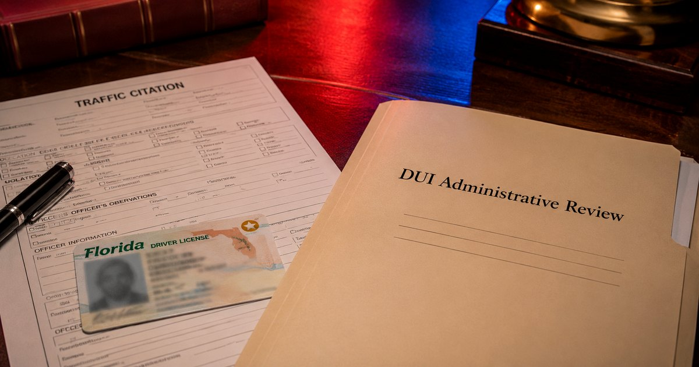
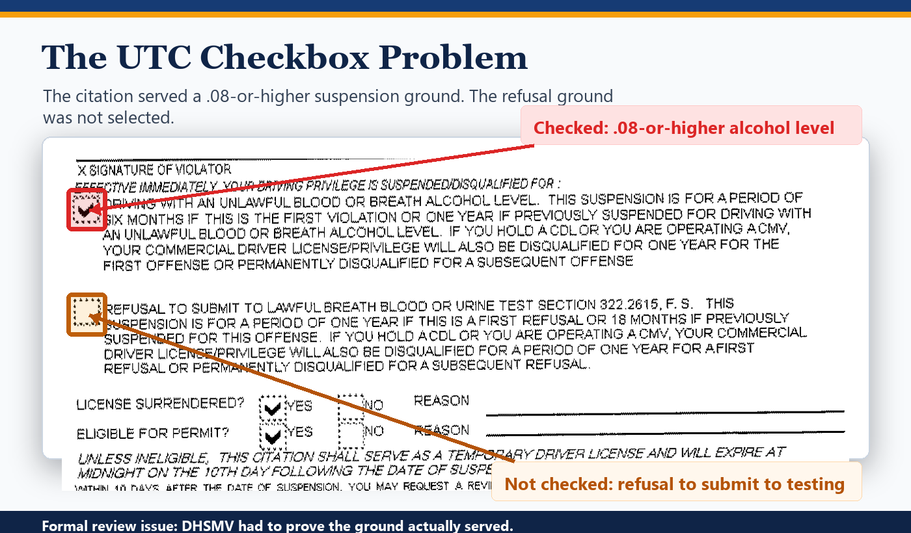
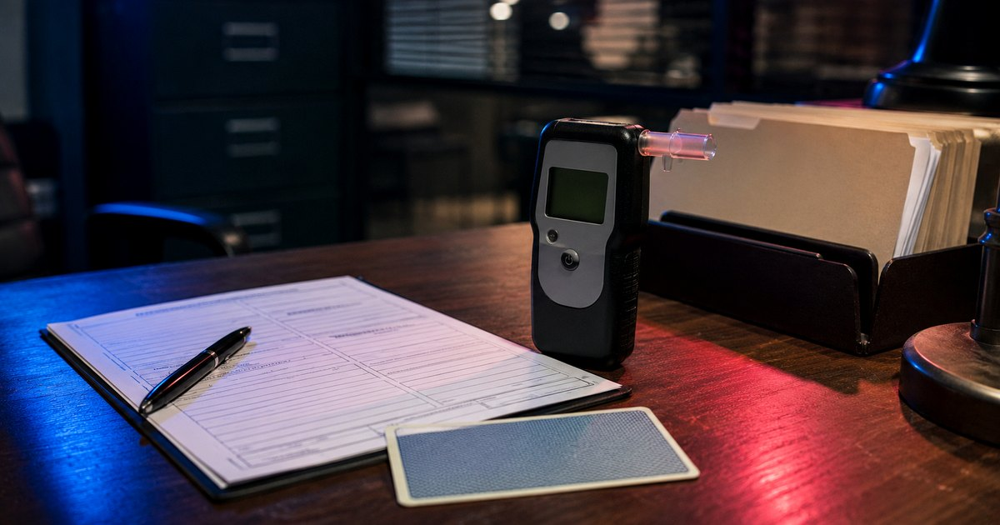
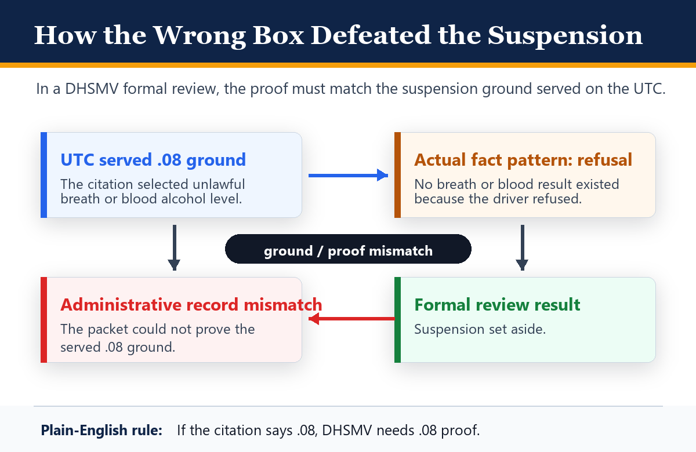

Wrong Box, Real Consequences: How a DUI Formal Review Can Turn on the UTC

When someone is arrested for DUI in Florida, two tracks start moving at the same time. One is the criminal case. The other is the administrative driver's license suspension through the Florida Department of Highway Safety and Motor Vehicles.
Those two tracks are not the same. A DHSMV formal review is an administrative hearing, not a DUI trial. It has its own hearing officer, its own statutory framework, and its own limited issues.
In a recent formal review, the difference mattered. The officer checked the wrong administrative suspension box on the DUI Uniform Traffic Citation. The client had refused a test, but the citation selected the suspension ground for driving with an unlawful blood or breath alcohol level of .08 or higher.

That was a critical failure. Because the officer served the .08-or-higher ground, DHSMV had to prove that ground. The packet did not contain a breath or blood alcohol result of .08 or higher because the client refused the test.
Suspension Set Aside
The government had to prove the suspension it actually served. It could not treat the hearing as though the refusal box had been checked.
A Formal Review Is Not a DUI Trial
In criminal court, the State may pursue different DUI theories: impairment, an unlawful breath or blood alcohol level, or both. The criminal case involves prosecutors, judges, motions, discovery, plea negotiations, and the burden of proof beyond a reasonable doubt.
The formal review hearing is narrower. Under section 322.2615, Florida Statutes, the hearing officer decides whether sufficient cause exists to sustain, amend, or invalidate the administrative suspension. The scope of review depends on the ground for the suspension.
If the suspension is based on an unlawful breath or blood alcohol level of .08 or higher, DHSMV has to prove that issue. If the suspension is based on refusal, DHSMV has to prove different issues: that a lawful test was requested, that the driver refused, and that the driver was warned about the license consequences of refusing.

Those are not the same case.
The Checkbox Chose the Playing Field
On the DUI citation itself, the officer has to identify the ground for the administrative suspension. Once that ground is served, the paperwork underneath it has to support that ground.
The UTC in this case selected the administrative suspension reason for driving with an unlawful blood or breath alcohol level. It did not select the refusal suspension box.
That meant DHSMV was trying to sustain a .08-or-higher suspension. But there was no breath or blood alcohol result of .08 or higher in the record. There could not be, because the client refused the test.
The officer may have meant to proceed under the refusal theory. But a formal review is governed by the administrative record and the statutory scope of review. DHSMV cannot treat the hearing as though a different suspension ground had been served.
The Rule in Plain English
If the citation says .08, DHSMV needs .08 proof. If the case is really a refusal, the officer needs to serve the refusal ground and the packet needs to prove refusal.

Why This Can Be a Critical Failure
People often call paperwork problems "technicalities." In a formal review, the checkbox on the UTC is more than a clerical note. It tells the driver why the license is being suspended. It affects the suspension period. It affects hardship eligibility. It affects what DHSMV has to prove.
A first refusal suspension is generally one year. A first .08-or-higher suspension is generally six months. The hardship-license consequences are different too.
More importantly, the proof is different. If DHSMV proceeds on an unlawful alcohol level theory, the hearing officer is looking for proof of an unlawful breath or blood alcohol level. If the officer actually had a refusal case but checked the .08 box, DHSMV may not have the proof needed for the case it is asking the hearing officer to sustain.
The same problem can happen in the other direction. If the officer checks refusal, but the underlying paperwork only supports an unlawful alcohol level suspension, that mismatch can also be a critical failure. The ground served on the driver has to match the proof in the packet.
What DUI Defense Has to Look For
This is why DUI defense has to start quickly. A driver has only a short window to request a formal or informal review of the administrative suspension. If that deadline is missed, the license issue may be lost before the criminal case has even started.
The criminal case may still be defensible. The prosecutor may still have problems proving DUI. But that does not automatically fix the driver's license suspension.
The reverse is also true. Winning the formal review does not automatically dismiss the criminal DUI charge. The two systems overlap, but they are not the same.
Formal Review Checklist
- Did the officer properly issue the notice of suspension?
- Did the officer select the correct statutory basis on the UTC?
- Does the ground served on the UTC match the evidence in the packet?
- Does the packet contain the documents needed to prove that theory?
- If the ground is .08 or higher, did the breath or blood test actually produce a qualifying result?
- If the ground is refusal, was the implied consent warning properly handled?
The Takeaway
The government has to prove the suspension it actually served.
If the DUI citation says the suspension is for driving with an unlawful breath or blood alcohol level, then DHSMV needs evidence of an unlawful breath or blood alcohol level. If the facts are really about a refusal, the officer needed to serve the refusal suspension ground and the record needed to support that refusal theory.
When the selected ground and the supporting paperwork do not match, the suspension should not stand.
The wrong box on the UTC was not harmless. It was the difference between sustaining the suspension and setting it aside.
Case Result Note
This post discusses a real case result. Every case is different, and prior results do not guarantee a similar outcome.